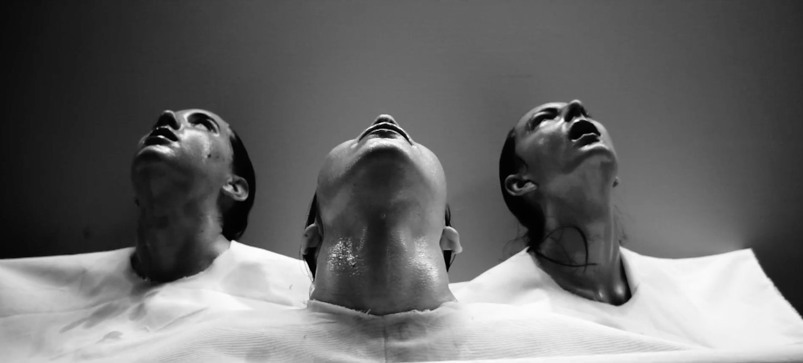
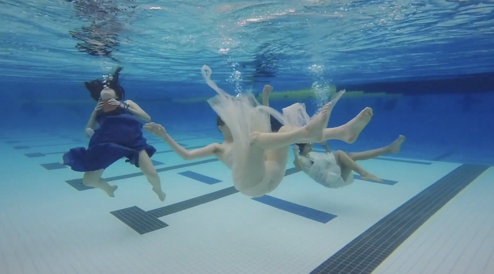

I make films where the camera dances. I design and weld camera stabilizers so that the lens can move with the body. I trained in Documentary Filmmaking at Prague Film School, and my work has been recognized on the international festival circuit.
Not Today · Award-winning 48-hour film, 2016
Martha's Vineyard Dance Film Festival · 2026 trailer
Malpaso Dance Company, Elemental · Video for The Joyce Theater, 2019
Watch my demo reel →More films on YouTube →
Selected credits
- 2026Martha's Vineyard Dance Film Festival · Programming & production, with Circuit Arts and The Yard
- 2026Dance Film Festival Workshop · Co-founder, Camera, Movement & Sound Workshop, Martha's Vineyard
- 2025Garnerville Arts Festival · 20-minute video installation alongside original paintings and mixed media
- 2024-25Films That Move · Field Producer, Operations Manager, Cape Charles, VA
- 2020Red Is Dancing × The Ailey School · Production Assistant, dance film tribute to Judy Chicago's The Dinner Party, Brooklyn Museum
- 2019The Joyce Theater · Video for Malpaso Dance Company in Robyn Mineko Williams' Elemental
- 2016Boundless in Brooklyn 48-Hour Dance Film Competition · Winner
